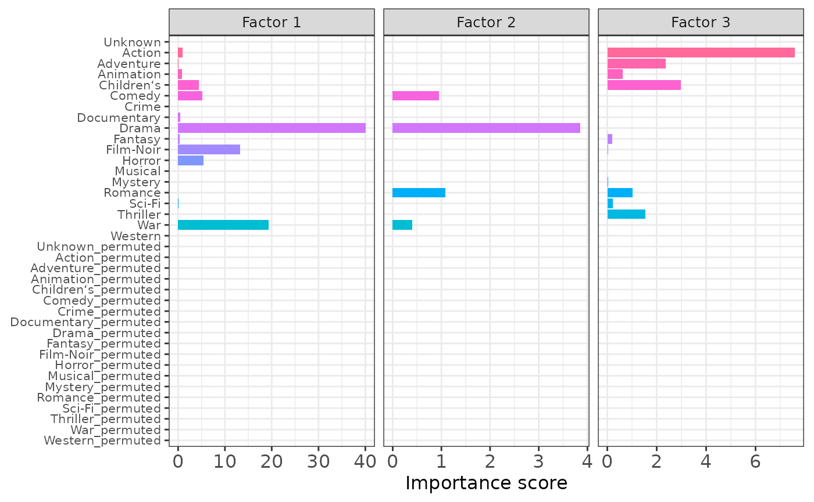

Enrichment of movie genre information
WANG Zhiwei, HKUST
May 14, 2023
Source:vignettes/ml100k.Rmd
ml100k.Rmd
# library(RhpcBLASctl)
# blas_set_num_threads(32)
# install.packages("devtools")
# devtools::install_github("YangLabHKUST/mfair")
library(mfair)
library(Matrix)
library(reshape2)
library(ggplot2)
library(scales)
set.seed(20230514)
ml100k data
Each row represents a user and each column represents a movie in the
rating matrix, and each row represents a movie and each
column represents a genre in the genre matrix (use
help(ml100k) for more details about the data).
Fitting the MFAI model
We use the rating matrix as the main data matrix \(Y\), and the genre data frame
as the auxiliary matrix \(X\). Then we
proceed to fit the MFAI model with top three factors.
# Create MFAIR object
Y <- t(ml100k$rating)
X <- ml100k$genre
mfairObject <- createMFAIR(Y, X, K_max = 3)
#> The main data matrix Y has been stored in the sparse mode!
#> The main data matrix Y is partially observed!
#> The main data matrix Y has been centered with mean = 3.52986!
# Fit the MFAI model
mfairObject <- fitGreedy(mfairObject,
save_init = TRUE,
sf_para = list(verbose_loop = FALSE)
)
#> Set K_max = 3!
#> Initialize the parameters of factor 1......
#> After 2 iterations Stage 1 ends!
#> After 95 iterations Stage 2 ends!
#> Factor 1 retained!
#> Save the initializaiton information......
#> Initialize the parameters of factor 2......
#> After 2 iterations Stage 1 ends!
#> After 181 iterations Stage 2 ends!
#> Factor 2 retained!
#> Save the initializaiton information......
#> Initialize the parameters of factor 3......
#> After 2 iterations Stage 1 ends!
#> After 35 iterations Stage 2 ends!
#> Factor 3 retained!
#> Save the initializaiton information......Importance score
After fitting the MFAI model, we can use the
getImportance() function to obtain the importance score of
each genre within each factor.
# Get importance score
importance <- as.data.frame(getImportance(mfairObject, which_factors = 1:3))
importance$Genre <- rownames(importance)
importance_long <- melt(
data = importance,
id.vars = "Genre",
variable.name = "Factor",
value.name = "Importance"
)
importance_long$Genre <- factor(importance_long$Genre, levels = rev(colnames(X)))
# head(importance_long)
# Visualize the importance score
p1 <- ggplot(
data = importance_long,
aes(x = Genre, y = Importance, fill = Genre)
) +
geom_col() +
coord_flip() +
scale_y_continuous(labels = label_comma(accuracy = 1)) +
xlab(NULL) +
ylab("Importance score") +
guides(fill = "none") +
theme_bw() +
theme(
text = element_text(size = 12),
axis.title = element_text(size = 12),
axis.text.x = element_text(size = 12),
axis.text.y = element_text(size = 10),
aspect.ratio = 2
) +
facet_grid(. ~ Factor, scales = "free")
p1The higher the importance score is, the more a specific movie genre contributes to improving the model.
Negative control
Next, let’s create a permuted movie genre matrix \(X^{\text{pmt}}\), where each column of \(X^{\text{pmt}}\) was obtained by permuting the entries of the corresponding column in the real genre data \(X\). Then we fit the MFAI model with \(Y\) and \(X^{\text{pmt}}\) as input.
n_pmt <- dim(X)[2]
X_pmt <- apply(X,
MARGIN = 2,
FUN = function(x) {
N <- length(x)
x[sample(x = c(1:N), size = N, replace = FALSE)]
}
)
X_pmt <- as.data.frame(X_pmt)
colnames(X_pmt) <- paste0(colnames(X), "_permuted")
# Create MFAIR object and use the same initialization
mfairObject_pmt <- createMFAIR(Y, X_pmt, K_max = 3)
#> The main data matrix Y has been stored in the sparse mode!
#> The main data matrix Y is partially observed!
#> The main data matrix Y has been centered with mean = 3.52986!
mfairObject_pmt@initialization <- mfairObject@initialization
# Fit the MFAI model
mfairObject_pmt <- fitGreedy(mfairObject_pmt,
sf_para = list(verbose_loop = FALSE)
)
#> Set K_max = 3!
#> Use the user-specific initialization for factor 1......
#> After 2 iterations Stage 1 ends!
#> After 96 iterations Stage 2 ends!
#> Factor 1 retained!
#> Use the user-specific initialization for factor 2......
#> After 2 iterations Stage 1 ends!
#> After 176 iterations Stage 2 ends!
#> Factor 2 retained!
#> Use the user-specific initialization for factor 3......
#> After 2 iterations Stage 1 ends!
#> After 34 iterations Stage 2 ends!
#> Factor 3 retained!
# Get importance score
importance_pmt <- as.data.frame(getImportance(mfairObject_pmt, which_factors = 1:3))
importance_pmt$Genre <- rownames(importance_pmt)
importance_pmt_long <- melt(
data = importance_pmt,
id.vars = "Genre",
variable.name = "Factor",
value.name = "Importance"
)
importance_pmt_long$Genre <- factor(importance_pmt_long$Genre, levels = rev(colnames(X_pmt)))
# head(importance_pmt_long)
# Visualize the importance score
p2 <- ggplot(
data = importance_pmt_long,
aes(x = Genre, y = Importance, fill = Genre)
) +
geom_col() +
coord_flip() +
scale_y_continuous(labels = label_comma(accuracy = 1)) +
xlab(NULL) +
ylab("Importance score") +
guides(fill = "none") +
theme_bw() +
theme(
text = element_text(size = 12),
axis.title = element_text(size = 12),
axis.text.x = element_text(size = 12),
axis.text.y = element_text(size = 10),
aspect.ratio = 2
) +
facet_grid(. ~ Factor, scales = "free")
p2MFAI correctly assigns low importance scores to all permuted genres, suggesting that MFAI avoids incorporating irrelevant auxiliary information.
At last, we use \(X^{\text{both}} = [X, X^{\text{pmt}}]\) as the input auxiliary information and fit the MFAI model.
X_both <- cbind(X, X_pmt)
# Create MFAIR object and use the same initialization
mfairObject_both <- createMFAIR(Y, X_both, K_max = 3)
#> The main data matrix Y has been stored in the sparse mode!
#> The main data matrix Y is partially observed!
#> The main data matrix Y has been centered with mean = 3.52986!
mfairObject_both@initialization <- mfairObject@initialization
# Fit the MFAI model
mfairObject_both <- fitGreedy(mfairObject_both,
sf_para = list(verbose_loop = FALSE)
)
#> Set K_max = 3!
#> Use the user-specific initialization for factor 1......
#> After 2 iterations Stage 1 ends!
#> After 95 iterations Stage 2 ends!
#> Factor 1 retained!
#> Use the user-specific initialization for factor 2......
#> After 2 iterations Stage 1 ends!
#> After 181 iterations Stage 2 ends!
#> Factor 2 retained!
#> Use the user-specific initialization for factor 3......
#> After 2 iterations Stage 1 ends!
#> After 35 iterations Stage 2 ends!
#> Factor 3 retained!
# Get importance score
importance_both <- as.data.frame(getImportance(mfairObject_both, which_factors = 1:3))
importance_both$Genre <- rownames(importance_both)
importance_both_long <- melt(
data = importance_both,
id.vars = "Genre",
variable.name = "Factor",
value.name = "Importance"
)
importance_both_long$Genre <- factor(importance_both_long$Genre, levels = rev(colnames(X_both)))
# head(importance_both_long)
# Visualize the importance score
p3 <- ggplot(
data = importance_both_long,
aes(x = Genre, y = Importance, fill = Genre)
) +
geom_col() +
coord_flip() +
scale_y_continuous(labels = label_comma(accuracy = 1)) +
xlab(NULL) +
ylab("Importance score") +
guides(fill = "none") +
theme_bw() +
theme(
text = element_text(size = 12),
axis.title = element_text(size = 12),
axis.text.x = element_text(size = 12),
axis.text.y = element_text(size = 8),
aspect.ratio = 2
) +
facet_grid(. ~ Factor, scales = "free")
p3
MFAI successfully distinguished the useful movie genres from irrelevant ones. Moreover, the importance scores obtained using \(X^{\text{both}}\) are highly consistent with those obtained using \(X\) and \(X^{\text{pmt}}\) as separate inputs, indicating the stability and robustness of MFAI.